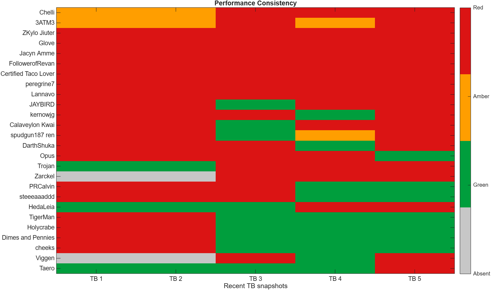
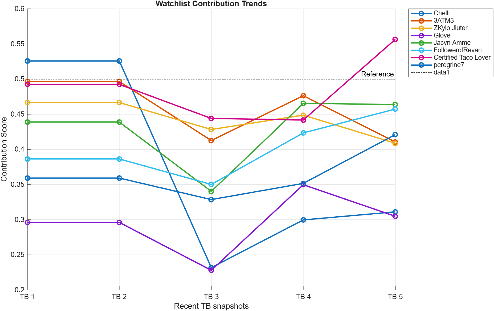

OANR Territory Battle
Officer Performance Log
Snapshot 2026-09-20 19:48:08. Analysed phases [2 3 4 5 6]. This page tracks patterns across TB snapshots.
16 logged snapshots60 players in log50 current players
Performance Consistency

Recent TBs across the top, players down the side. Grey means absent from that snapshot.
Watchlist Trends

Contribution score trend for players currently on the officer watchlist.
Consistent Underachievers
| Name | Status | PatternReason | RecentRuns | WatchFlags | ConcernFlags | CurrentRisk | CurrentReason | CurrentScore | ScoreChangePct |
|---|---|---|---|---|---|---|---|---|---|
| Chelli | Concern | non-green in 5 recent TBs, low waves in 3 recent TBs, missed deploys in 2 recent TBs, score down 21% vs recent average | 5 | 3 | 5 | Red | missed deploy, low waves | 0.311 | -0.214 |
| 3ATM3 | Concern | non-green in 5 recent TBs, missed deploys in 2 recent TBs | 5 | 3 | 5 | Red | missed deploy, low waves, low platoons | 0.411 | -0.127 |
| ZKylo Jiuter | Concern | non-green in 5 recent TBs, low waves in 5 recent TBs, missed deploys in 2 recent TBs | 5 | 3 | 5 | Red | missed deploy, low waves | 0.409 | -0.097 |
| Glove | Concern | non-green in 5 recent TBs, low waves in 5 recent TBs | 5 | 3 | 5 | Red | low waves | 0.305 | 0.042 |
| Jacyn Amme | Concern | non-green in 5 recent TBs, low waves in 4 recent TBs, missed deploys in 2 recent TBs | 5 | 3 | 5 | Red | low waves | 0.464 | 0.102 |
| FollowerofRevan | Concern | non-green in 5 recent TBs, low waves in 4 recent TBs | 5 | 3 | 5 | Red | low platoons | 0.457 | 0.183 |
| Certified Taco Lover | Concern | non-green in 5 recent TBs | 5 | 3 | 5 | Red | low platoons | 0.557 | 0.190 |
| peregrine7 | Concern | non-green in 5 recent TBs, low waves in 5 recent TBs | 5 | 3 | 5 | Red | low waves | 0.421 | 0.204 |
| Lannavo | Concern | non-green in 5 recent TBs, low waves in 5 recent TBs, missed deploys in 3 recent TBs | 5 | 3 | 5 | Red | low waves | 0.350 | 0.570 |
| JAYBIRD | Concern | non-green in 4 recent TBs, low waves in 3 recent TBs | 5 | 2 | 4 | Red | low waves | 0.456 | -0.065 |
| kernowjg | Concern | non-green in 4 recent TBs, low waves in 4 recent TBs, missed deploys in 2 recent TBs | 5 | 2 | 4 | Red | missed deploy, low waves | 0.444 | -0.060 |
| Calaveylon Kwai | Concern | non-green in 4 recent TBs | 5 | 2 | 4 | Red | low platoons | 0.574 | -0.013 |
| spudgun187 ren | Concern | non-green in 4 recent TBs, low waves in 3 recent TBs | 5 | 2 | 4 | Red | low waves | 0.483 | 0.079 |
| DarthShuka | Concern | non-green in 4 recent TBs, low waves in 4 recent TBs | 5 | 2 | 4 | Red | low waves | 0.460 | 0.081 |
| Opus | Concern | non-green in 4 recent TBs, missed deploys in 4 recent TBs | 5 | 2 | 4 | Green | solid contributor | 0.686 | 0.231 |
| Trojan | Concern | non-green in 3 recent TBs, low waves in 3 recent TBs | 5 | 3 | 3 | Red | low waves | 0.341 | -0.122 |
| Zarckel | Concern | non-green in 3 recent TBs, low waves in 3 recent TBs | 3 | 3 | 3 | Red | low waves | 0.374 | 0.451 |
| PRCalvin | Concern | non-green in 3 recent TBs, missed deploys in 3 recent TBs | 5 | 1 | 3 | Green | solid contributor, above expected GP | 0.803 | 0.199 |
| steeeaaaddd | Concern | non-green in 3 recent TBs, low waves in 3 recent TBs, missed deploys in 2 recent TBs | 5 | 1 | 3 | Green | solid contributor, above expected GP | 0.461 | 0.200 |
| HedaLeia | Concern | missed deploys in 2 recent TBs | 5 | 2 | 2 | Red | missed deploy | 0.475 | -0.080 |
| TigerMan | Concern | missed deploys in 2 recent TBs | 5 | 0 | 2 | Green | solid contributor, above expected GP | 0.671 | 0.028 |
| Holycrabe | Concern | missed deploys in 2 recent TBs | 5 | 0 | 2 | Green | solid contributor, above expected GP | 0.692 | 0.029 |
| Dimes and Pennies | Concern | missed deploys in 2 recent TBs | 5 | 0 | 2 | Green | solid contributor, above expected GP | 0.688 | 0.085 |
| cheeks | Concern | missed deploys in 2 recent TBs | 5 | 0 | 2 | Green | solid contributor, above expected GP | 0.676 | 0.246 |
Reliable Core
| Name | Score | ExpectedRatio | Waves | PlatoonUnits | Missed |
|---|---|---|---|---|---|
| Din Al | 0.948 | 1.186 | 101 | 111 | 0 |
| Locohoco | 0.919 | 1.422 | 114 | 21 | 0 |
| Banshajn | 0.876 | 1.520 | 109 | 21 | 0 |
| Dulce Periculum | 0.820 | 1.220 | 85 | 70 | 0 |
| Iceman2781 | 0.783 | 1.467 | 97 | 15 | 0 |
| Preece | 0.767 | 1.164 | 80 | 45 | 0 |
| EmperorArteta | 0.738 | 1.132 | 79 | 41 | 0 |
| Cameron2394 | 0.723 | 1.209 | 79 | 36 | 0 |
| Talyn Stormborn | 0.707 | 1.202 | 68 | 71 | 0 |
| Custardman | 0.685 | 1.257 | 77 | 10 | 0 |
| DarthVenatus | 0.685 | 1.183 | 75 | 19 | 0 |
| Obo Nâm | 0.675 | 1.077 | 68 | 104 | 0 |
Latest Strong Performers
| Name | RiskGroup | Score | ExpectedRatio | Waves | PlatoonUnits | Missed |
|---|---|---|---|---|---|---|
| Banshajn | Green | 0.876 | 1.520 | 109 | 21 | 0 |
| Iceman2781 | Green | 0.783 | 1.467 | 97 | 15 | 0 |
| Locohoco | Green | 0.919 | 1.422 | 114 | 21 | 0 |
| Custardman | Green | 0.685 | 1.257 | 77 | 10 | 0 |
| Fleshstorm | Green | 0.671 | 1.245 | 78 | 7 | 0 |
| Dimes and Pennies | Green | 0.688 | 1.235 | 77 | 7 | 0 |
| Everton Jabb | Green | 0.592 | 1.234 | 62 | 27 | 0 |
| Dulce Periculum | Green | 0.820 | 1.220 | 85 | 70 | 0 |
| Cameron2394 | Green | 0.723 | 1.209 | 79 | 36 | 0 |
| Talyn Stormborn | Green | 0.707 | 1.202 | 68 | 71 | 0 |
Generated Files
- TB_Performance_Log.csv
- TB_Performance_Watchlist.csv
- officer_performance.html
- 08_performance_consistency.png
- 09_watchlist_trends.png